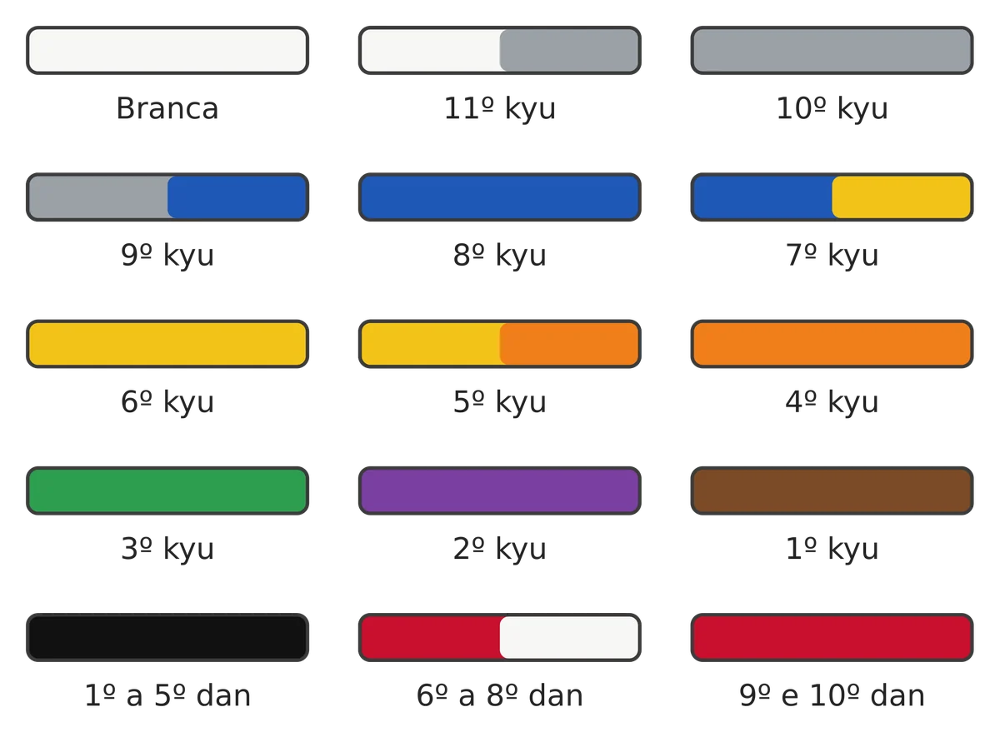

Material de estudo · atualizado em 22/11/2026
Judô: técnicas e exames de faixa
Programa da CBJ, regras e classificação da IJF/Kodokan, ilustrado: as 40 técnicas do Gokyo em kuzushi, tsukuri e kake, o programa de cada faixa até a preta, combinações, contragolpes e o que é proibido em competição.

00Sumário
- 01Fontes e escopo
- 02Classificação oficial das técnicas (Kodokan/IJF, 2017)
- 03Gokyo-no-waza: os 5 grupos de ensino
- 04Fichas de estudo do Gokyo (40 técnicas)
- 05Faixas: idade mínima e carência
- 06Programa de exame das faixas kyu (11º ao 1º)
- 07Programa de exame dos dans
- 08Como é pontuado
- 09Outorga, comissões e bancas
- 10IJF: validação e programa de dan a partir de 2026
- 11Simulado da prova teórica
- 12Programa detalhado por faixa, do 11º kyu à faixa preta
- 13Renraku-waza: combinações em pé e no solo
- 14Kaeshi-waza: contragolpes
- 15Técnicas e ações proibidas (regras IJF vigentes)
- 16Observações e limites
- ★Índice de técnicas
01Fontes e escopo
No Brasil, o que cai em cada exame segue o regulamento nacional da CBJ. Cada Comissão Estadual de Graduação monta o próprio programa dentro dele e envia à CBJ para aprovação anual. A IJF define a classificação oficial das técnicas e, desde 2026, valida os dans concedidos pelas federações nacionais.
| Documento | Emissor | O que traz |
|---|---|---|
| Regulamento para Exame e Outorga de Faixas e Graus – 2021 | CBJ (Conselho Nacional de Graus) | Idade, carência, programa por faixa, pontos para dan, outorga e bancas |
| Regulamento Nacional de Promoção e Outorga de Faixas (RNPOF) 2023 | CBJ | Versão citada pela FJERJ em 2026; o PDF não pôde ser lido aqui |
| Regulamento de Outorga de Faixas – 2018 | CBJ | Programa detalhado por faixa (base das versões seguintes) |
| Resolução CBJ nº 001/2025 | CBJ | Readequa os interstícios de registro no Zempo |
| Regulamento Exame de Graduação 2026 | Federação Paulista (FPJudô) | Exemplo de regulamento estadual para 1º a 5º dan |
| IJF – Kodokan Classification of Judo Techniques | IJF / Kodokan | 68 nage-waza e 32 katame-waza (lista de 2017) |
| Rules for Grades Awarding – Projet 2025 | IJF | Programa de exame do 1º ao 10º dan |
| Towards a universal reference for judo grades | IJF | Reforma: validação de todos os dans pela IJF a partir de 2026 |
| "DAN" ranks and GRADES | IJF | Estatuto da IJF sobre graus (art. 24) |
02Classificação oficial das técnicas (Kodokan/IJF, 2017)
O Kodokan e a IJF reconhecem 100 técnicas: 68 de projeção (nage-waza) e 32 de controle no solo (katame-waza). Atemi-waza é o terceiro grupo da classificação, mas só aparece nos katas. Fonte: IJF – Kodokan Classification.
Fonte: elaborado a partir de IJF (2017). As projeções se dividem entre técnicas em pé e de sacrifício; o solo, entre imobilizações, estrangulamentos e chaves.
Nage-waza (68)
| Bloco | Subgrupo | Nº | Técnicas |
|---|---|---|---|
| Tachi-waza | Te-waza (mão) | 16 | seoi-nage, ippon-seoi-nage, seoi-otoshi, tai-otoshi, kata-guruma, sukui-nage, obi-otoshi, uki-otoshi, sumi-otoshi, yama-arashi, obi-tori-gaeshi, morote-gari, kuchiki-taoshi, kibisu-gaeshi, uchi-mata-sukashi, ko-uchi-gaeshi |
| Tachi-waza | Koshi-waza (quadril) | 10 | uki-goshi, o-goshi, koshi-guruma, tsurikomi-goshi, sode-tsurikomi-goshi, harai-goshi, tsuri-goshi, hane-goshi, utsuri-goshi, ushiro-goshi |
| Tachi-waza | Ashi-waza (pé/perna) | 21 | de-ashi-harai, okuri-ashi-harai, o-soto-otoshi, hiza-guruma, uchi-mata, tsubame-gaeshi, sasae-tsurikomi-ashi, ko-soto-gake, o-soto-gaeshi, o-soto-gari, ashi-guruma, o-uchi-gaeshi, o-uchi-gari, harai-tsurikomi-ashi, hane-goshi-gaeshi, ko-soto-gari, o-guruma, harai-goshi-gaeshi, ko-uchi-gari, o-soto-guruma, uchi-mata-gaeshi |
| Sutemi-waza | Ma-sutemi-waza (para trás) | 5 | tomoe-nage, sumi-gaeshi, hikikomi-gaeshi, tawara-gaeshi, ura-nage |
| Sutemi-waza | Yoko-sutemi-waza (lateral) | 16 | yoko-otoshi, yoko-wakare, uchi-mata-makikomi, tani-otoshi, yoko-guruma, harai-makikomi, hane-makikomi, yoko-gake, ko-uchi-makikomi, soto-makikomi, daki-wakare, kani-basami*, uchi-makikomi, o-soto-makikomi, kawazu-gake*, uki-waza |
Katame-waza (32)
| Subgrupo | Nº | Técnicas |
|---|---|---|
| Osaekomi-waza (imobilizações) | 10 | kesa-gatame, kuzure-kesa-gatame, ushiro-kesa-gatame, kata-gatame, kami-shiho-gatame, kuzure-kami-shiho-gatame, yoko-shiho-gatame, tate-shiho-gatame, uki-gatame, ura-gatame |
| Shime-waza (estrangulamentos) | 12 | nami-juji-jime, gyaku-juji-jime, kata-juji-jime, hadaka-jime, okuri-eri-jime, kataha-jime, katate-jime, ryote-jime, sode-guruma-jime, tsukkomi-jime, sankaku-jime, do-jime* |
| Kansetsu-waza (chaves) | 10 | ude-garami, juji-gatame, ude-gatame, hiza-gatame, waki-gatame, hara-gatame, ashi-gatame, te-gatame, sankaku-gatame, ashi-garami* |
* Proibidas em competição pela IJF: kani-basami, kawazu-gake, do-jime e ashi-garami.
Referências
INTERNATIONAL JUDO FEDERATION. Kodokan classification of judo techniques. [S. l.]: IJF, 2017. Disponível em: britishjudo.org.uk. Acesso em: 22 nov. 2026.
KANO, Jigoro. Kodokan judo. Tokyo: Kodansha International, 1986.
03Gokyo-no-waza: os 5 grupos de ensino
O Gokyo (revisão de 1920) organiza 40 projeções em 5 grupos de 8, da queda mais fácil para a mais difícil. Nos exames da CBJ, cada grupo (kyô) é cobrado em bloco a partir da faixa amarela/laranja. Em 1982 e 1997 o Kodokan acrescentou 8 técnicas preservadas e 20 técnicas novas, chegando a 68 (judoinfo; Kodokan, gokyo história e pedagogia).
Fonte: elaborado a partir de CBJ (2022) e Kodokan. Até a amarela/laranja, as técnicas do 1º kyô entram uma a uma, de uma (11º kyu) a seis (6º kyu).
| Grupo | Técnicas (ordem oficial) | Cobrado na CBJ |
|---|---|---|
| Dai-ikkyo (1º) | de-ashi-harai, hiza-guruma, sasae-tsurikomi-ashi, uki-goshi, o-soto-gari, o-goshi, o-uchi-gari, seoi-nage | Do 11º ao 6º kyu (1 a 6 técnicas); todas no 5º kyu |
| Dai-nikyo (2º) | ko-soto-gari, ko-uchi-gari, koshi-guruma, tsurikomi-goshi, okuri-ashi-harai, tai-otoshi, harai-goshi, uchi-mata | 4º kyu (laranja) |
| Dai-sankyo (3º) | ko-soto-gake, tsuri-goshi, yoko-otoshi, ashi-guruma, hane-goshi, harai-tsurikomi-ashi, tomoe-nage, kata-guruma | 3º kyu (verde) |
| Dai-yonkyo (4º) | sumi-gaeshi, tani-otoshi, hane-makikomi, sukui-nage, utsuri-goshi, o-guruma, soto-makikomi, uki-otoshi | 2º kyu (roxa) |
| Dai-gokyo (5º) | o-soto-guruma, uki-waza, yoko-wakare, yoko-guruma, ushiro-goshi, ura-nage, sumi-otoshi, yoko-gake | 1º kyu (marrom) |
| Habukareta-waza (8) | obi-otoshi, seoi-otoshi, yama-arashi, o-soto-otoshi, daki-wakare, hikikomi-gaeshi, tawara-gaeshi, uchi-makikomi | Exames de dan (nage-waza geral) |
| Shinmeisho-no-waza (20) | morote-gari, kuchiki-taoshi, kibisu-gaeshi, uchi-mata-sukashi, tsubame-gaeshi, o-soto-gaeshi, o-uchi-gaeshi, hane-goshi-gaeshi, harai-goshi-gaeshi, uchi-mata-gaeshi, kani-basami, o-soto-makikomi, kawazu-gake, harai-makikomi, uchi-mata-makikomi, sode-tsurikomi-goshi, ippon-seoi-nage, obi-tori-gaeshi, ko-uchi-gaeshi, ko-uchi-makikomi | Exames de dan (nage-waza geral) |
Referências
JUDOINFO. The 67 Kodokan judo throws: nagewaza. [S. l.], [s. d.]. Disponível em: judoinfo.com. Acesso em: 22 nov. 2026.
EL Kodokan judo gokyo-no-waza: su historia y pedagogía. Revista de Artes Marciales Asiáticas, León, v. 21, n. 1, 2026. DOI: 10.18002/rama.v21i1.2601.
DAIGO, Toshiro. Kodokan judo throwing techniques. Tokyo: Kodansha International, 2005.
04Fichas de estudo do Gokyo (40 técnicas)
Cada ficha traz a direção principal do desequilíbrio (kuzushi) e a ação-chave de execução, para guarda tori destro (pegada direita). O link abre a demonstração oficial da IJF, com imagem e vídeo de cada técnica. As descrições são uma síntese didática e não substituem a correção do professor.
| Grupo / faixa | Técnica | Classe | Kuzushi principal | Ação-chave | Imagem e vídeo |
|---|---|---|---|---|---|
| 1º kyô · até 5º kyu | De-ashi-harai | Ashi-waza | Lateral, sobre o pé que avança | Varrer o pé avançado logo antes de receber o peso | IJF |
| 1º kyô | Hiza-guruma | Ashi-waza | Frente-direita | Bloquear o joelho com a sola do pé e girar o uke sobre ele | IJF |
| 1º kyô | Sasae-tsurikomi-ashi | Ashi-waza | Frente-direita | Calçar o tornozelo com a sola, puxando e elevando | IJF |
| 1º kyô | Uki-goshi | Koshi-waza | Frente | Encaixe raso do quadril, braço pelas costas, girar o uke sobre o quadril | IJF |
| 1º kyô | O-soto-gari | Ashi-waza | Trás-direita | Ceifar por fora a perna de apoio, de trás para a frente | IJF |
| 1º kyô | O-goshi | Koshi-waza | Frente | Quadril profundo, braço na cintura do uke, elevar e girar | IJF |
| 1º kyô | O-uchi-gari | Ashi-waza | Para trás | Ceifar por dentro a perna do uke, abrindo suas pernas | IJF |
| 1º kyô | Seoi-nage | Te-waza | Frente | Entrar de costas, braço sob a axila, carregar sobre o ombro | IJF |
| 2º kyô · 4º kyu | Ko-soto-gari | Ashi-waza | Trás, sobre o calcanhar | Ceifar o calcanhar por fora, na direção dos dedos | IJF |
| 2º kyô | Ko-uchi-gari | Ashi-waza | Trás-direita | Ceifar o calcanhar por dentro | IJF |
| 2º kyô | Koshi-guruma | Koshi-waza | Frente | Braço envolvendo o pescoço, quadril além do quadril do uke | IJF |
| 2º kyô | Tsurikomi-goshi | Koshi-waza | Frente e para cima | Puxar e elevar pela gola, quadril abaixo do uke | IJF |
| 2º kyô | Okuri-ashi-harai | Ashi-waza | Lateral, no deslocamento | Varrer os dois pés juntos no passo lateral | IJF |
| 2º kyô | Tai-otoshi | Te-waza | Frente-direita | Perna estendida bloqueia a canela; a projeção vem da rotação das mãos | IJF |
| 2º kyô | Harai-goshi | Koshi-waza | Frente-direita | Quadril encaixado, varrer a coxa com a perna estendida | IJF |
| 2º kyô | Uchi-mata | Ashi-waza | Frente | Elevar a coxa interna do uke com a parte de trás da coxa | IJF |
| 3º kyô · 3º kyu | Ko-soto-gake | Ashi-waza | Trás | Enganchar o calcanhar por fora e empurrar | IJF |
| 3º kyô | Tsuri-goshi | Koshi-waza | Frente | Pegada na faixa por cima ou por baixo do braço, elevar pelo quadril | IJF |
| 3º kyô | Yoko-otoshi | Yoko-sutemi-waza | Lateral direita | Tori cai de lado, bloqueando o pé do uke | IJF |
| 3º kyô | Ashi-guruma | Ashi-waza | Frente-direita | Perna estendida bloqueia o joelho; girar o uke por cima | IJF |
| 3º kyô | Hane-goshi | Koshi-waza | Frente-direita | Perna flexionada lança a coxa interna do uke para cima | IJF |
| 3º kyô | Harai-tsurikomi-ashi | Ashi-waza | Frente, em diagonal | Varrer o tornozelo do pé avançado puxando e elevando | IJF |
| 3º kyô | Tomoe-nage | Ma-sutemi-waza | Frente | Tori senta, pé no abdômen e projeção em círculo por cima | IJF |
| 3º kyô | Kata-guruma | Te-waza | Frente-direita | Carregar o uke atravessado sobre os ombros | IJF |
| 4º kyô · 2º kyu | Sumi-gaeshi | Ma-sutemi-waza | Frente | Tori cai para trás, peito do pé sob a coxa interna | IJF |
| 4º kyô | Tani-otoshi | Yoko-sutemi-waza | Trás, em diagonal | Tori cai atrás do uke, bloqueando as duas pernas | IJF |
| 4º kyô | Hane-makikomi | Yoko-sutemi-waza | Frente-direita | Hane-goshi enrolando o uke com o próprio corpo | IJF |
| 4º kyô | Sukui-nage | Te-waza | Para trás | Recolher as pernas do uke e elevar | IJF |
| 4º kyô | Utsuri-goshi | Koshi-waza | Contra-ataque: para cima | Elevar o uke e trocar de quadril no ar | IJF |
| 4º kyô | O-guruma | Ashi-waza | Frente-direita | Perna estendida bloqueia na altura do quadril do uke | IJF |
| 4º kyô | Soto-makikomi | Yoko-sutemi-waza | Frente-direita | Prender o braço do uke e enrolar-se para fora | IJF |
| 4º kyô | Uki-otoshi | Te-waza | Frente | Joelho ao chão, projeção feita só com as mãos | IJF |
| 5º kyô · 1º kyu | O-soto-guruma | Ashi-waza | Trás-direita | Bloquear as duas pernas por trás | IJF |
| 5º kyô | Uki-waza | Yoko-sutemi-waza | Frente-direita | Tori cai de lado, perna estendida como barreira | IJF |
| 5º kyô | Yoko-wakare | Yoko-sutemi-waza | Frente | Tori se lança de lado à frente do uke | IJF |
| 5º kyô | Yoko-guruma | Yoko-sutemi-waza | Frente | Contra o uke curvado: deslizar entre as pernas e girar | IJF |
| 5º kyô | Ushiro-goshi | Koshi-waza | Contra-ataque: para cima e para trás | Elevar o uke pelo quadril e baixá-lo de costas | IJF |
| 5º kyô | Ura-nage | Ma-sutemi-waza | Para trás | Elevar o uke e projetá-lo para trás por cima de si | IJF |
| 5º kyô | Sumi-otoshi | Te-waza | Trás, em diagonal | Projeção para o canto traseiro só com as mãos | IJF |
| 5º kyô | Yoko-gake | Yoko-sutemi-waza | Lateral | Varrer o pé de apoio enquanto cai de lado | IJF |
Ilustrações das 40 técnicas em três fases
Cada técnica aparece nas três fases que a IJF e o Kodokan usam para descrever uma projeção: 崩し kuzushi, a ação de desequilibrar o oponente para preparar a projeção; 作り tsukuri, a preparação da projeção depois de quebrar o equilíbrio; e 掛け kake, a execução (IJF, 2017). No quadro 1, a seta reta mostra a direção oficial do desequilíbrio. No quadro 2, o círculo tracejado marca o ponto de contato preparado. No quadro 3, a seta pontilhada mostra a trajetória da projeção. Tori veste branco e uke, azul. Na prática as três fases formam um único movimento contínuo; a separação é didática, como propôs Kano.
1º kyô · amarela/laranja
2º kyô · laranja
3º kyô · verde
4º kyô · roxa
5º kyô · marrom
Referências
INTERNATIONAL JUDO FEDERATION. Judo techniques. [S. l.]: IJF, [s. d.]. Disponível em: judo.ijf.org. Acesso em: 22 nov. 2026.
KANO, Jigoro. Kodokan judo. Tokyo: Kodansha International, 1986.
DAIGO, Toshiro. Kodokan judo throwing techniques. Tokyo: Kodansha International, 2005.
05Faixas: idade mínima e carência
A CBJ tem 11 graus kyu (faixas coloridas, dangai) e 10 graus dan. A carência conta na faixa anterior. Da verde em diante, exige-se também tempo de registro no Zempo, readequado pela Resolução CBJ nº 001/2025.
Fonte: elaborado a partir de CBJ (2022). CPJ = Confederação Pan-Americana de Judô, que homologa o 7º dan.
| Faixa | Grau | Idade mínima | Carência mínima |
|---|---|---|---|
| Branca/cinza | 11º kyu | 4 anos | 3 meses |
| Cinza | 10º kyu | 5 anos | 3 meses |
| Cinza/azul | 9º kyu | 6 anos | 6 meses |
| Azul | 8º kyu | 7 anos | 6 meses |
| Azul/amarela | 7º kyu | 8 anos | 6 meses |
| Amarela | 6º kyu | 9 anos | 6 meses |
| Amarela/laranja | 5º kyu | 10 anos | 12 meses |
| Laranja | 4º kyu | 11 anos | 12 meses |
| Verde | 3º kyu | 12 anos | 12 meses + 1 ano de Zempo |
| Roxa | 2º kyu | 13 anos | 12 meses + 2 anos de Zempo |
| Marrom | 1º kyu | 14 anos | 12 meses + 3 anos de Zempo |
| Preta | 1º dan (Shodan) | 16 anos | 2 anos (1 ano se maior de 20) + 4 anos de Zempo |
| Preta | 2º dan (Nidan) | 20 anos | 4 anos + 5 anos de Zempo |
| Preta | 3º dan (Sandan) | 25 anos | 5 anos + 6 anos de Zempo |
| Preta | 4º dan (Yondan) | 30 anos | 5 anos + 7 anos de Zempo |
| Preta | 5º dan (Godan) | 36 anos | 6 anos + 8 anos de Zempo |
| Vermelha e branca | 6º dan | 44 anos | 6 anos |
| Vermelha e branca | 7º dan | 52 anos | 7 anos |
| Vermelha e branca | 8º dan | 59 anos | 7 anos |
| Vermelha | 9º dan | 66 anos | 8 anos (homologação IJF) |
| Vermelha | 10º dan | 74 anos | 8 anos (homologação IJF) |
Atletas olímpicos, paralímpicos e medalhistas mundiais têm carências reduzidas (Tabela 6 do regulamento). Cumprir pontos não reduz a carência (art. 7º, § 1º).
Referências
CONFEDERAÇÃO BRASILEIRA DE JUDÔ. Regulamento para exame e outorga de faixas e graus – 2021. Rio de Janeiro: CBJ, 2022. Disponível em: cbj.com.br. Acesso em: 22 nov. 2026.
CONFEDERAÇÃO BRASILEIRA DE JUDÔ. Resolução nº 001/2025: dispõe sobre a readequação dos interstícios de cadastro no sistema Zempo. Rio de Janeiro: CBJ, 24 jul. 2025. Disponível em: judorio.org. Acesso em: 22 nov. 2026.
06Programa de exame das faixas kyu (11º ao 1º)
Os exames são cumulativos: cada faixa cobra o conteúdo novo e tudo o que veio antes. O conteúdo específico (quais projeções e imobilizações) é definido pela Comissão Estadual (art. 6º, § 1º). Renraku-waza são sequências de golpes, kaeshi-waza são contragolpes e viradas são transições para dominar o uke em decúbito ventral.
| Faixa (kyu) | Ukemi e fundamentos | Nage-waza | Katame-waza | Kata | Teoria e cultura |
|---|---|---|---|---|---|
| Branca/cinza (11º) | Saudações (ritsu-rei, za-rei); ushiro e yoko ukemi deitado | 1 do 1º kyô | 1 imobilização | — | Vocabulário: sensei |
| Cinza (10º) | Yoko ukemi agachado; mae-mawari ukemi | 2 do 1º kyô | 2 imobilizações | — | Contar até 10 em japonês; tatame, judogi; Jigoro Kano |
| Cinza/azul (9º) | Kumi-kata; 3 ukemi em movimento | 3 do 1º kyô | 3 imobilizações | — | Comandos (hajime, mate, sono-mama, sore-made); Kodokan |
| Azul (8º) | Kuzushi; 1 renraku-waza | 4 do 1º kyô | 3 imobilizações; 2 viradas | — | Vestuário, amarrar a faixa; Kodokan (1882) e ju-jutsu |
| Azul/amarela (7º) | 6 posturas (shisei); 2 renraku; 1 kaeshi | 5 do 1º kyô | 4 imobilizações; 2 viradas | — | Ordem das faixas; termos de treino e competição; nascimento de Kano (1860) |
| Amarela (6º) | Deslocamentos (shintai); 3 renraku; 2 kaeshi | 6 do 1º kyô | 5 imobilizações; 3 viradas; fusegi no solo | — | Tori e uke; morte de Kano (1938) |
| Amarela/laranja (5º) | Tai-sabaki; defesas em pé; 4 renraku; 3 kaeshi | Todas do 1º kyô | 6 imobilizações; 4 viradas | — | Significado de judô; seiryoku-zen'yo e jita-kyoei; 1º Brasileiro (1954) |
| Laranja (4º) | 8 direções de kuzushi com tsukuri e kake; 5 renraku; 4 kaeshi | Todas do 2º kyô | 7 imobilizações; 5 viradas; saídas (nogare-kata) | — | Judô olímpico (Tóquio 1964, Munique 1972) |
| Verde (3º) | 6 renraku; 5 kaeshi | Todas do 3º kyô | 8 imobilizações; 6 viradas; 1 passagem de guarda | Nage-no-kata: te-waza | Randori, kata e shiai; Mundiais |
| Roxa (2º) | 7 renraku; 6 kaeshi | Todas do 4º kyô | 9 imobilizações; 2 shime-waza; 2 kansetsu-waza; 4 viradas; 2 passagens de guarda com finalização | Nage-no-kata: koshi-waza | Classificação das técnicas (nage, katame, atemi) |
| Marrom (1º) | 8 renraku; 7 kaeshi | Todas do 5º kyô | 4 shime-waza; 4 kansetsu-waza; 6 viradas; defesa da guarda com finalização | Nage-no-kata: ashi-waza | Noções de arbitragem; mesa de oficiais; conceito de kôdansha |
Como é avaliado: o regulamento nacional não fixa nota nem escala para os kyu. O exame é feito na associação, sob responsabilidade de professor faixa preta registrado na CBJ, e homologado pela federação. Na prática, o professor aprova quem executa o programa com segurança e cumpre idade e carência.
Referências
CONFEDERAÇÃO BRASILEIRA DE JUDÔ. Regulamento para exame e outorga de faixas e graus – 2021. Rio de Janeiro: CBJ, 2022. Art. 4º e 6º. Disponível em: cbj.com.br. Acesso em: 22 nov. 2026.
CONFEDERAÇÃO BRASILEIRA DE JUDÔ. Regulamento para exame e outorga de faixas e graus. Rio de Janeiro: Conselho Nacional de Graus, 2018. Cap. V. Disponível em: cbj.com.br. Acesso em: 22 nov. 2026.
07Programa de exame dos dans
Do 1º ao 5º dan há exame prático e teórico na Comissão Estadual, além de pontos de currículo. Cada dan acrescenta um kata completo e sorteia uma série do kata do grau anterior. Do 6º dan em diante a promoção é por currículo, sem prova.
Fonte: elaborado a partir de CBJ (2022), art. 6º. A sequência dos katas acompanha o aprofundamento técnico: projeção, solo, princípio da suavidade, defesa pessoal.
| Dan | Kata completo | Kata por sorteio | Prova técnica | Teoria e didática |
|---|---|---|---|---|
| 1º (Shodan) | Nage-no-kata | — | Nage-waza, renraku-waza, kaeshi-waza, katame-waza; arbitragem prática | História, filosofia, ética, atualidades, classificação das técnicas, ortografia japonesa; descrição escrita do Nage-no-kata |
| 2º (Nidan) | Katame-no-kata | 1 série do Nage-no-kata | Nage-waza, renraku-henka-waza, kaeshi-waza, katame-waza | Descrição escrita do Katame-no-kata; arbitragem; ensino didático |
| 3º (Sandan) | Ju-no-kata | 1 grupo do Katame-no-kata | Fundamentos técnicos | Descrição do Ju-no-kata; organização de eventos; ensino didático |
| 4º (Yondan) | Kime-no-kata | 1 grupo do Ju-no-kata | Fundamentos técnicos | Descrição do Kime-no-kata; organização de eventos; ensino didático |
| 5º (Godan) | Kodokan Goshin-jutsu | 1 grupo do Kime-no-kata | Fundamentos técnicos | Descrição do Goshin-jutsu; experiência de ensino; cursos pedagógicos |
| 6º (Rokudan) | Currículo | — | — | Apresentação de Ju-no-kata como tori ou uke em eventos |
| 7º (Shichidan) | Currículo | — | — | Conhecimento teórico de Koshiki-no-kata; publicações |
| 8º (Hachidan) | Currículo | — | — | Conhecimento teórico de Itsutsu-no-kata; cargos administrativos; publicações |
| 9º e 10º | Indicação | — | — | Homologação pela IJF; 10º dan por unanimidade do Comitê Executivo |
Uke no exame (exemplo FPJudô 2026): faixa roxa ou acima para Shodan, marrom ou acima para Nidan e yudansha do Sandan em diante. Isenção de kata vale só para a função de tori, para quem atingiu a pontuação em competições oficiais de kata.
Referências
CONFEDERAÇÃO BRASILEIRA DE JUDÔ. Regulamento para exame e outorga de faixas e graus – 2021. Rio de Janeiro: CBJ, 2022. Art. 6º, itens XII a XVIII. Disponível em: cbj.com.br. Acesso em: 22 nov. 2026.
FEDERAÇÃO PAULISTA DE JUDÔ. Exame de graduação 2026: regulamento nº 022/2026. São Paulo: FPJudô, 31 mar. 2026. Disponível em: fpj.com.br. Acesso em: 22 nov. 2026.
08Como é pontuado
A CBJ pontua o currículo, não a execução. O candidato a dan precisa de um mínimo de pontos acumulados na carência para se inscrever. Notas e média de aprovação das provas ficam a cargo de cada federação.
Pontos mínimos de currículo (CBJ)
| Dan | Pontos mínimos | Janela de contagem |
|---|---|---|
| 1º | 700 | últimos 2 anos |
| 2º | 750 | últimos 4 anos |
| 3º | 1.200 | últimos 5 anos |
| 4º | 1.500 | últimos 5 anos |
| 5º | 2.000 | últimos 6 anos |
| 6º | 6.300 | carência |
| 7º e 8º | 7.200 | carência |
De onde vêm os pontos (tabelas do art. 7º)
- Resultados em competição: de 10 (participação local) a 110 (1º no Circuito IJF). Brasileiro, 1º lugar = 80; Pan-Americano, 1º = 100. Limite: 70% do total exigido.
- Atuação em eventos: árbitro, técnico, coordenação e apoio, de 5 a 140 conforme o nível.
- Seminários, cursos e demonstrações de kata: de 20 a 140 (regional a internacional).
- Escolaridade (só o maior nível): fundamental 40; médio 50; superior incompleto 75; superior 100; especialização 150; mestrado 200; doutorado 300.
- Graduação em arbitragem: de 20 (regional) a 100 (IJF A).
- Publicações: monografia, dissertação ou tese 50; artigo científico 70; apostila oficial ou livro 80.
- Cargos: presidente da CBJ 130/ano; de federação 100/ano; membro de banca 60 por evento.
- Penalidade: sem participação em cursos pedagógicos de kata, a carência dobra por ano de ausência (art. 21).
Notas das provas: exemplo da FPJudô 2026
Cada examinador dá nota de 0 a 10 a cada técnica. A nota final é a média dos três examinadores (art. 17). A prova teórica tem 20 questões de múltipla escolha.
| Dan | Média mínima na prática | Acerto mínimo na teórica | Currículo competidor | Currículo não competidor |
|---|---|---|---|---|
| Shodan | 5,0 | 50% | 465 | 500 |
| Nidan | 6,0 | 60% | 640 | 650 |
| Sandan | 7,0 | 70% | 1.020 | 1.070 |
| Yondan | 7,0 | 70% | 1.100 | 1.150 |
| Godan | 7,0 | 70% | 1.100 | 1.150 |
Os módulos obrigatórios da FPJudô valem 200 pontos: oficiais técnicos 30, arbitragem 30, kata 70, fundamentos técnicos 70 e história, filosofia, ética e terminologia 30. Quem reprova pode refazer a teórica após o módulo de história; a prática ganha nova data da Comissão.
Referências
CONFEDERAÇÃO BRASILEIRA DE JUDÔ. Regulamento para exame e outorga de faixas e graus – 2021. Rio de Janeiro: CBJ, 2022. Art. 6º, 7º e 21. Disponível em: cbj.com.br. Acesso em: 22 nov. 2026.
FEDERAÇÃO PAULISTA DE JUDÔ. Exame de graduação 2026: regulamento nº 022/2026. São Paulo: FPJudô, 31 mar. 2026. Art. 17 e 21; Anexo I. Disponível em: fpj.com.br. Acesso em: 22 nov. 2026.
09Outorga, comissões e bancas
Quanto mais alto o grau, mais alta a instância que outorga. Os kyu ficam na associação e na federação. Do 1º ao 5º dan a Comissão Estadual examina e a CBJ homologa. Do 7º em diante a decisão sai do país.
Fonte: elaborado a partir de CBJ (2022), art. 4º, e IJF (2025). A validação de todos os dans pela IJF vale desde 2026.
| Grau | Quem examina ou indica | Quem homologa |
|---|---|---|
| 11º ao 1º kyu (dangai) | Professor faixa preta, maior de 18 anos, registrado na CBJ. O 1º dan promove até a verde; do 2º dan em diante, até a marrom | Federação estadual |
| 1º ao 5º dan (yudansha) | Comissão Estadual de Graduação (exame teórico e prático) | CBJ |
| 6º dan | Comissão Estadual indica; Conselho Nacional de Graus analisa (mínimo de 4 votos) | Presidente da CBJ |
| 7º dan | Federação recomenda ao CNG | Confederação Pan-Americana |
| 8º ao 10º dan | CNG recomenda ao Presidente da CBJ | IJF (10º dan por unanimidade do Comitê Executivo) |
Regras das bancas e exames
- A Comissão Estadual tem no mínimo 3 membros do Registro Geral de Graduação, homologados anualmente pela CBJ, com presidente e secretário (art. 10).
- O examinador precisa ter grau superior ao do candidato. A federação pode pedir à CBJ um examinador de grau adequado (art. 13, §§ 3º e 4º).
- A federação pede autorização à CBJ com 30 dias de antecedência; exames não autorizados não são reconhecidos (art. 13).
- Os exames de dan são anuais, com intervalo mínimo de 10 meses (art. 13, § 5º).
- A ata e as cópias das provas vão à CBJ em até 30 dias (art. 14).
Referências
CONFEDERAÇÃO BRASILEIRA DE JUDÔ. Regulamento para exame e outorga de faixas e graus – 2021. Rio de Janeiro: CBJ, 2022. Art. 4º e 8º a 14. Disponível em: cbj.com.br. Acesso em: 22 nov. 2026.
10IJF: validação e programa de dan a partir de 2026
Em 1º de dezembro de 2025 o Comitê Executivo da IJF reformou o sistema de graduação. A partir de 2026, todo dan concedido por federação nacional precisa ser validado pela IJF, com um ano de transição. Para os kyu, a IJF publica diretrizes pedagógicas, não um currículo obrigatório. Para os dans, as federações devem seguir o programa mínimo da IJF.
A avaliação se apoia no triângulo shin-gi-tai: tai (corpo), medido sobretudo por resultados esportivos; gi (técnica e estudo), pelo conhecimento técnico; shin (espírito), pelo envolvimento com os outros e pelo exemplo pessoal.
Fonte: elaborado a partir de IJF (2024). Os três eixos pesam juntos; nenhum basta sozinho para o grau.
| Dan | Idade mínima | Tempo no grau anterior | Programa do exame |
|---|---|---|---|
| 1º | 15 anos | 1 ano de marrom | Mondo (origem do judô e educação); Nage-no-kata (3 primeiras séries); Katame-no-kata (1 série); 5 nage-waza e 5 ne-waza sorteados; kakari-geiko, uchi-komi, nage-komi; 5 ippons em competição. Meta do Gokyo: 89 técnicas |
| 2º | 17 anos | 2 anos de 1º dan | Mondo de 5 min ("judô mais que esporte"); Nage-no-kata e Katame-no-kata completos; 5 ippons sobre faixas pretas. Meta: 94 técnicas |
| 3º | 20 anos | 3 anos de 2º dan | Mondo; Katame-no-kata e Kime-no-kata completos; randori de 2 min; séries de nage-komi; 5 ippons. Meta: 100 técnicas |
| 4º | 24 anos | 4 anos de 3º dan | Mondo de 10 min (uso ótimo da energia); demonstração didática de grupos de nage-waza e ne-waza; Gokyo completo; prova de kata; randori; 5 ippons |
| 5º | 24 anos | 5 anos de 4º dan | Mondo de 10 min (shin, gi, tai); Ju-no-kata completo; 2 nage e 2 ne-waza de escolha (10 min cada); 5 ippons |
| 6º | 30 a 50 anos (categorias A a D) | 6 a 12 anos | Mondo (judô na sociedade civil); Koshiki-no-kata completo; apresentação de pesquisa pessoal de 20 min; 5 ippons |
| 7º | 38 a 62 anos (A a D) | 8 a 12 anos | Apresentação pessoal; contribuição (vídeo de cerca de 30 min ou 10 páginas A4); Itsutsu-no-kata completo; 5 ippons |
| 8º | 50 ou 60 anos (A ou B) | 10 ou 15 anos | Sem prova técnica; mondo em vídeo ou 30 páginas A4, atestado por dois 7º dan |
| 9º | — | — | Sem demonstração física; mondo em vídeo atestado por dois 7º dan |
| 10º | cerca de 70 anos | cerca de 10 anos | Sem candidatura individual; indicação por federação, união continental ou Comitê Executivo; decisão unânime |
As categorias A a D do 6º ao 10º dan dão bônus de tempo conforme o perfil (competidor, árbitro, técnico, dirigente, professor). O documento de 2024 é um projeto: não traz nota mínima, composição de banca nem regras para kyu.
Referências
INTERNATIONAL JUDO FEDERATION. Rules for grades awarding: IJF official judo dan from 1st to 10th dan – projet 2025. [S. l.]: IJF, 26 jun. 2024. Disponível em: storage.googleapis.com. Acesso em: 22 nov. 2026.
INTERNATIONAL JUDO FEDERATION. Towards a universal reference for judo grades. [S. l.]: IJF, 2025. Disponível em: ijf.org. Acesso em: 22 nov. 2026.
INTERNATIONAL JUDO FEDERATION. "Dan" ranks and grades. [S. l.]: IJF, [2011]. Disponível em: eju.net. Acesso em: 22 nov. 2026.
11Simulado da prova teórica
A prova teórica de dan da FPJudô tem 20 questões de múltipla escolha, com aprovação de 50% (Shodan) a 70% (Sandan em diante). As 15 questões abaixo cobrem os conteúdos teóricos das faixas kyu e do 1º dan. O gabarito está no fim.
Referências
FEDERAÇÃO PAULISTA DE JUDÔ. Exame de graduação 2026: regulamento nº 022/2026. São Paulo: FPJudô, 31 mar. 2026. Disponível em: fpj.com.br. Acesso em: 22 nov. 2026.
KANO, Jigoro. Kodokan judo. Tokyo: Kodansha International, 1986.
12Programa detalhado por faixa, do 11º kyu à faixa preta
A CBJ fixa quantas técnicas cada faixa deve mostrar. A Comissão Estadual define quais, e o professor prepara o aluno dentro disso. As tabelas abaixo usam os quantitativos oficiais da CBJ e preenchem cada vaga com técnicas na ordem do Gokyo e das imobilizações do Kodokan. Os exemplos de combinações e contragolpes são os ilustrados nos capítulos seguintes. Trate as escolhas como um roteiro de estudo e confirme com a sua federação.
Técnicas específicas por faixa
| Faixa | Nage-waza novas (acumulativas) | Katame-waza | Renraku-waza (qtd. · exemplo) | Kaeshi-waza (qtd. · exemplo) |
|---|---|---|---|---|
| Branca/cinza (11º) | De-ashi-harai | Kesa-gatame | — | — |
| Cinza (10º) | Hiza-guruma | + Kuzure-kesa-gatame | — | — |
| Cinza/azul (9º) | Sasae-tsurikomi-ashi | + Yoko-shiho-gatame | — | — |
| Azul (8º) | Uki-goshi | 3 imobilizações; 2 viradas | 1 · De-ashi-harai → O-soto-gari | — |
| Azul/amarela (7º) | O-soto-gari | + Kami-shiho-gatame; 2 viradas | 2 · + Sasae → O-soto-gari | 1 · O-soto-gaeshi |
| Amarela (6º) | O-goshi | + Kuzure-kami-shiho-gatame; 3 viradas; fusegi | 3 · + Ko-uchi-gari → Seoi-nage | 2 · + Tsubame-gaeshi |
| Amarela/laranja (5º) | O-uchi-gari, Seoi-nage (1º kyô completo) | + Tate-shiho-gatame; 4 viradas | 4 · + O-uchi-gari → Tai-otoshi | 3 · + Ko-uchi-gaeshi |
| Laranja (4º) | 2º kyô completo | + Kata-gatame; 5 viradas; nogare-kata | 5 · + O-uchi-gari → Uchi-mata | 4 · + O-uchi-gaeshi |
| Verde (3º) | 3º kyô completo | + Ushiro-kesa-gatame; 6 viradas; 1 passagem de guarda | 6 · + Ko-soto-gari → Yoko-otoshi | 5 · + Uchi-mata-sukashi |
| Roxa (2º) | 4º kyô completo | + Uki-gatame (9 imobilizações); Hadaka-jime e Okuri-eri-jime; Juji-gatame e Ude-garami | 7 · + Hane-goshi → O-uchi-gari | 6 · + Harai-goshi-gaeshi |
| Marrom (1º) | 5º kyô completo | + Kata-juji-jime e Nami-juji-jime; Ude-gatame e Waki-gatame; defesa da guarda | 8 · + Harai-goshi → O-soto-gari | 7 · + Uchi-mata-gaeshi |
| Preta (1º dan) | Gokyo completo e técnicas extras | Katame-waza dos três grupos | Renraku-henka-waza livres, incluindo pé → solo | Kaeshi-waza livres |
No exame admissional para dans, a FJERJ cobra quantidades por grupo. São 6 técnicas de cada grupo de nage-waza, 5 kaeshi-waza e 5 renraku-henka-waza para o 1º dan. No 2º dan são 10 técnicas por grupo e 7 kaeshi-waza. Do 4º dan em diante, todas.
Fundamentos e regras por faixa
| Faixa | Fundamentos (kihon) | Kata | Teoria e regras que o aluno deve conhecer |
|---|---|---|---|
| Branca/cinza (11º) | Ritsu-rei e za-rei; ushiro e yoko-ukemi | — | Sensei; comportamento no dojo |
| Cinza (10º) | Yoko-ukemi agachado; mae-mawari-ukemi | — | Contagem em japonês; Jigoro Kano |
| Cinza/azul (9º) | Kumi-kata; ukemi em movimento | — | Comandos: hajime, mate, sono-mama, yoshi, sore-made |
| Azul (8º) | Kuzushi | — | Kodokan (1882); origem no ju-jutsu |
| Azul/amarela (7º) | 6 posturas (shizen-tai e jigo-tai) | — | Ordem das faixas; termos de treino e competição |
| Amarela (6º) | Shintai (ayumi-ashi, tsugi-ashi) | — | Tori e uke; o que é shido |
| Amarela/laranja (5º) | Tai-sabaki; defesas em pé | — | Seiryoku-zen'yo e jita-kyoei; ippon, waza-ari e yuko |
| Laranja (4º) | Happo-no-kuzushi com tsukuri e kake | — | Judô olímpico; pegadas proibidas (pernas) |
| Verde (3º) | Randori controlado | Nage-no-kata: te-waza | Randori, kata, shiai; restrições de cadetes (cabeça, reverse seoi-nage) |
| Roxa (2º) | Transição pé → solo | Nage-no-kata: koshi-waza | Classificação das técnicas; técnicas proibidas (kani-basami, kawazu-gake, do-jime, ashi-garami) |
| Marrom (1º) | Defesa e saídas no solo | Nage-no-kata: ashi-waza | Noções de arbitragem e mesa; kôdansha; lista de hansoku-make |
| Preta (1º dan) | Todos os anteriores | Nage-no-kata completo | História, filosofia, ética, arbitragem prática e regras vigentes da IJF |
As regras por idade valem para competição, não para o exame. Nas regras da IJF, cadetes recebem shido por usar a cabeça para projetar ou defender e por aplicar reverse seoi-nage (art. 18.1.4). As restrições de estrangulamentos e chaves nas classes infantis seguem o regulamento de competições da CBJ.
Referências
CONFEDERAÇÃO BRASILEIRA DE JUDÔ. Regulamento para exame e outorga de faixas e graus. Rio de Janeiro: CBJ, 2018. Cap. V. Disponível em: cbj.com.br. Acesso em: 22 nov. 2026.
FEDERAÇÃO DE JUDÔ DO ESTADO DO RIO DE JANEIRO. Informativo 006/24: técnicas para exame admissional. Rio de Janeiro: FJERJ, 2024. Disponível em: judorio.org. Acesso em: 22 nov. 2026.
FEDERAÇÃO MINEIRA DE JUDÔ. Regulamento de graduação inferior. Belo Horizonte: FMJ, 2018. Disponível em: federacaomineiradejudo.com.br. Acesso em: 22 nov. 2026.
INTERNATIONAL JUDO FEDERATION. Sport and Organisation Rules: refereeing rules. [S. l.]: IJF, ciclo 2025-2028. Art. 18. Disponível em: judoontario.ca. Acesso em: 22 nov. 2026.
13Renraku-waza: combinações em pé e no solo
連絡技 Renraku-waza é o encadeamento de duas ou mais técnicas: o primeiro ataque provoca uma reação de uke, e o segundo aproveita essa reação. 連絡変化技 Renraku-henka-waza é o nome usado nos regulamentos da CBJ e das federações para essas sequências e suas variações. A CBJ exige de 1 sequência (faixa azul) a 8 (marrom). Nenhuma instituição publica uma lista fechada: as combinações possíveis são praticamente ilimitadas. As 11 abaixo são clássicas e cobrem os quatro tipos que as bancas cobram.
| Tipo | Lógica | Exemplos ilustrados |
|---|---|---|
| Mesma direção | O 1º ataque desequilibra e o 2º aprofunda o mesmo desequilíbrio | De-ashi-harai → O-soto-gari |
| Direção oposta | Uke resiste ao 1º ataque e cai para o lado da resistência | Ko-uchi-gari → Seoi-nage; O-uchi-gari → Uchi-mata; O-uchi-gari → Tai-otoshi; Sasae-tsurikomi-ashi → O-soto-gari; Harai-goshi → O-soto-gari; Hane-goshi → O-uchi-gari |
| Pé → sacrifício | Uke escapa da varrida e tori completa com sutemi-waza | Ko-soto-gari → Yoko-otoshi |
| Pé → solo | A projeção não dá ippon e tori segue direto no ne-waza | O-soto-gari → Kesa-gatame |
| Solo → solo | Uke escapa de uma imobilização e tori muda de controle ou finaliza | Kesa-gatame → Kata-gatame; Yoko-shiho-gatame → Juji-gatame |
Em cada figura, o 1º quadro mostra a entrada do primeiro ataque e o 2º quadro mostra a execução do segundo.
Combinações em pé (tachi-waza → tachi-waza)
Do pé ao solo e combinações no solo (ne-waza)
No solo, a IJF só reconhece a imobilização feita com técnica classificada pelo Kodokan ou variação dela. Por isso, a transição deve terminar numa técnica do katame-waza oficial.
Referências
CONFEDERAÇÃO BRASILEIRA DE JUDÔ. Regulamento para exame e outorga de faixas e graus. Rio de Janeiro: CBJ, 2018. Cap. V. Disponível em: cbj.com.br. Acesso em: 22 nov. 2026.
INTERNATIONAL JUDO FEDERATION. New rules: what to remember. [S. l.]: IJF, 17 dez. 2024. Disponível em: ijf.org. Acesso em: 22 nov. 2026.
INTERNATIONAL JUDO FEDERATION. Kodokan classification of judo techniques. [S. l.]: IJF, 2017. Disponível em: britishjudo.org.uk. Acesso em: 22 nov. 2026.
14Kaeshi-waza: contragolpes
返技 Kaeshi-waza (também chamado ura-waza) é a resposta de tori a um ataque iniciado por uke, aproveitando o desequilíbrio que o próprio ataque cria. O Kodokan inclui na sua lista de 68 projeções oito técnicas com nome de contragolpe (-gaeshi ou -sukashi). Outras duas são descritas pela IJF como contratécnicas a golpes de quadril. A CBJ exige de 1 contragolpe (azul/amarela) a 7 (marrom), e a FJERJ cobra de 5 (1º dan) a 13 (5º dan).
| Contragolpe | Grupo Kodokan | Responde a | Ação de tori |
|---|---|---|---|
| O-soto-gaeshi | Ashi-waza | O-soto-gari | Absorve o ataque e ceifa de volta a perna que ataca |
| O-uchi-gaeshi | Ashi-waza | O-uchi-gari | Recua a perna atacada e projeta uke para trás |
| Ko-uchi-gaeshi | Te-waza | Ko-uchi-gari | Retira o pé e gira uke com as mãos |
| Hane-goshi-gaeshi | Ashi-waza | Hane-goshi | Engancha a perna de apoio de uke e o ceifa |
| Harai-goshi-gaeshi | Ashi-waza | Harai-goshi | Varre a perna de apoio enquanto a de ataque está no ar |
| Uchi-mata-gaeshi | Ashi-waza | Uchi-mata | Acompanha o giro e projeta uke de costas |
| Uchi-mata-sukashi | Te-waza | Uchi-mata | Esquiva: a perna de uke passa no vazio |
| Tsubame-gaeshi | Ashi-waza | De-ashi-harai, okuri-ashi-harai | Ergue o pé e varre o pé que varria |
| Utsuri-goshi | Koshi-waza | Golpes de quadril (ex.: harai-goshi) | Eleva uke, troca o quadril e projeta |
| Ushiro-goshi | Koshi-waza | Golpes de quadril (ex.: harai-goshi) | Ergue uke por trás e o arremessa de costas |
Nas figuras, uke (azul) ataca no 1º quadro e tori (branco) contra-ataca no 2º. Utsuri-goshi e ushiro-goshi já aparecem em três fases na galeria do Gokyo.
INTERNATIONAL JUDO FEDERATION. Kodokan classification of judo techniques. [S. l.]: IJF, 2017. Disponível em: britishjudo.org.uk. Acesso em: 22 nov. 2026.
KODOKAN JUDO INSTITUTE. Kouchi-gaeshi (hand technique). Tokyo: Kodokan, [s. d.]. Disponível em: kdkjd.org. Acesso em: 22 nov. 2026.
FEDERAÇÃO DE JUDÔ DO ESTADO DO RIO DE JANEIRO. Informativo 006/24: técnicas para exame admissional. Rio de Janeiro: FJERJ, 2024. Disponível em: judorio.org. Acesso em: 22 nov. 2026.
DAIGO, Toshiro. Kodokan judo throwing techniques. Tokyo: Kodansha International, 2005.
15Técnicas e ações proibidas (regras IJF vigentes)
As regras de arbitragem da IJF para o ciclo olímpico 2025-2028 (art. 18 das Sport and Organisation Rules) dividem as infrações em duas penalidades:
- Shido: advertência. O acúmulo de shidos pode levar à derrota; a contagem mudou nas regras de 2025-2026, então confira o texto vigente.
- Hansoku-make: desclassificação da luta. Na maioria dos casos, o atleta também fica fora do resto da competição.
Quatro técnicas do Kodokan constam da lista oficial, mas são proibidas em competição: kani-basami, kawazu-gake, do-jime e ashi-garami.
Hansoku-make direto: o atleta não pode continuar na competição (art. 18.2.2)
| Infração | Observação |
|---|---|
| Kawazu-gake | Enrolar a perna na de uke e cair para trás |
| Kani-basami | Tesoura com as pernas no tronco e nas pernas de uke |
| Do-jime | Tesoura com as pernas no tronco de uke |
| Ashi-garami | Chave de perna que torce o joelho |
| Kansetsu ou shime-waza em pé com alto risco | Sem chance de uke escapar; com risco menor é shido |
| Ceifar por dentro a perna de apoio de tori estando atrás dele | Ação de uke |
| Qualquer ação que ponha em risco o pescoço ou a coluna | Inclui ushiro-sankaku de alto risco (atualização de jan./2026) |
| Cair para trás de propósito com o oponente agarrado às costas | — |
| Levantar o oponente do tatame e empurrá-lo com força sem técnica | — |
| Desobedecer ao árbitro; gestos ou comentários ofensivos | Conduta |
| Objeto rígido ou metálico no judogi | Segurança |
| Ação contrária ao espírito do judô | Pode ser punida a qualquer momento |
Hansoku-make que permite seguir na competição (art. 18.2.1): mergulhar de cabeça no tatame ao projetar, por exemplo em uchi-mata, harai-goshi, seoi-nage, tai-otoshi, kata-guruma ou tsuri-goshi.
Principais shidos (art. 18.1)
- Falta de combatividade: posição negativa, falso ataque, não atacar após a pegada e sair da área de propósito.
- Pegadas ilegais: agarrar, bloquear ou tocar as pernas em pé; pegar dentro da barra da calça; dobrar os dedos do oponente.
- Quebra de pegada: soltar as duas mãos sem manter ao menos uma pegada.
- Bear hug: abraço com as mãos entrelaçadas.
- Contato com o rosto e no solo: pôr a mão ou o pé no rosto; hiperestender a perna em osaekomi, shime ou kansetsu-waza.
- Kansetsu em pé de menor risco: chave aplicada em pé com risco menor.
- Kata-sankaku de menor risco: era desclassificação direta e, desde 2026, é shido.
- Cadetes: usar a cabeça para projetar ou defender e aplicar reverse seoi-nage.
Ilustrações
INTERNATIONAL JUDO FEDERATION. Sport and Organisation Rules: refereeing rules. [S. l.]: IJF, ciclo 2025-2028. Art. 18 e 20. Disponível em: judoontario.ca. Acesso em: 22 nov. 2026.
INTERNATIONAL JUDO FEDERATION. New rules: what to remember. [S. l.]: IJF, 17 dez. 2024. Disponível em: ijf.org. Acesso em: 22 nov. 2026.
FEDERAZIONE ITALIANA JUDO LOTTA KARATE ARTI MARZIALI. Aggiornamento 2026 del regolamento arbitrale IJF. Roma: FIJLKAM, jan. 2026. Disponível em: fijlkam.it. Acesso em: 22 nov. 2026.
BRITISH JUDO. 2026 contest rules to be implemented from 21 February. Loughborough: BJA, 2026. Disponível em: britishjudo.org.uk. Acesso em: 22 nov. 2026.
16Observações e limites
- Versão vigente: a FJERJ cita para 2026 o Regulamento Nacional (RNPOF) 2023 da CBJ. O PDF dessa versão não pôde ser lido aqui, então os números vêm da versão 2021, publicada em 2022. Vale conferir idade, carência e pontos no RNPOF 2023 antes de usar oficialmente.
- Variação estadual: cada Comissão Estadual define quais técnicas, notas e módulos cobra, dentro do regulamento nacional. A FPJudô é só um exemplo.
- IJF × CBJ: idades e carências do projeto IJF (1º dan aos 15 anos, por exemplo) diferem das da CBJ (16 anos). Com a validação obrigatória, é provável que a CBJ ajuste o regulamento; ainda não há texto oficial sobre isso nas fontes consultadas.
- Imagens das técnicas: fotos de terceiros têm direitos autorais e não foram copiadas. As 51 ilustrações deste documento são originais, geradas por scripts Python (um por figura), com poses conferidas com as descrições oficiais da IJF. A demonstração oficial de cada técnica está no canal do Kodokan e na IJF Judo Academy.
O formato das fichas de estudo e do simulado seguiu a proposta do Kit Troca de Faixa do Judô: golpes do Gokyo organizados por faixa e questões de conhecimento. O conteúdo desse kit é pago e não pôde ser lido, por isso as fichas e as questões deste documento foram feitas a partir das fontes oficiais citadas.
Referências
FEDERAÇÃO DE JUDÔ DO ESTADO DO RIO DE JANEIRO. Exame admissional da FJERJ 2026: boletim oficial 023/25. Rio de Janeiro: FJERJ, 25 nov. 2025. Disponível em: judorio.org. Acesso em: 22 nov. 2026.
CONFEDERAÇÃO BRASILEIRA DE JUDÔ. Regulamento nacional de promoção e outorga de faixas (RNPOF) 2023. Rio de Janeiro: CBJ, 2023. Disponível em: cbj.com.br. Acesso em: 22 nov. 2026.
★Índice de técnicas
Toque no nome para ir direto à ilustração.